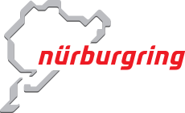
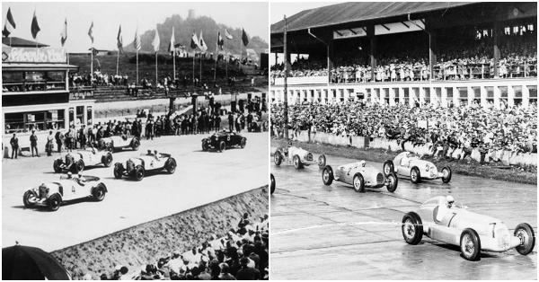
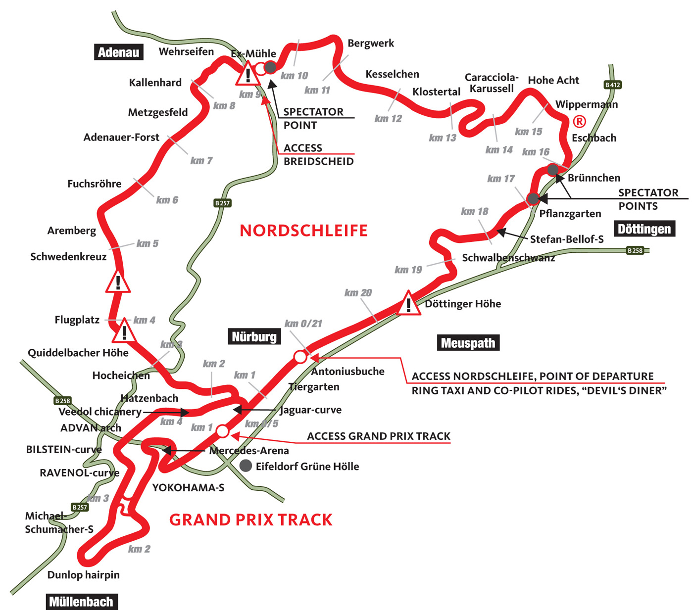

OTONEWS.com
Nürburgring
Trek Paling Ikonik yang ada Di Dunia


Nürburgring adalah kompleks balap dengan kapasitas hingga 150.000 orang, yang terletak di kota Nürburg, Rhineland-Palatinate, Jerman. Kompleks ini mencakup trek balap Grand Prix yang dibangun pada tahun 1984, dan trek panjang Nordschleife, yang disebut "Lingkaran Utara," yang dibangun pada tahun 1920-an, mengelilingi desa dan kastil abad pertengahan Nürburg di pegunungan Eifel. Lingkaran utara memiliki panjang 20,830 km (12,943 mi) dan memiliki perubahan elevasi lebih dari 300 meter (1.000 kaki) dari titik terendah hingga tertinggi. Jackie Stewart memberi julukan trek ini sebagai "Neraka Hijau."
Pada awalnya, trek ini memiliki empat konfigurasi: Gesamtstrecke sepanjang 28,265 km (17,563 mi), yang terdiri dari Nordschleife sepanjang 22,835 km (14,189 mi) dan Südschleife sepanjang 7,747 km (4,814 mi). Selain itu, terdapat lingkaran pemanasan sepanjang 2,281 km (1,417 mi) yang disebut Zielschleife atau Betonschleife, yang mengelilingi area pit.
Antara tahun 1982 dan 1983, area start/finish dihancurkan untuk membuat GP-Strecke baru, yang kini digunakan untuk semua acara balap besar dan internasional. Namun, Nordschleife yang dipendekkan masih digunakan untuk balapan, pengujian, dan akses masyarakat.
Sejarah Nürburgring
Pembangunan Nordschleife
Sejarah Nürburgring dimulai pada awal tahun 1920-an, ketika para produsen mobil dan pencinta balap berkeinginan untuk memiliki trek balap yang lebih menantang dan serbaguna di Jerman. Pada tahun 1925, Gustav Eichler mengajukan rencana untuk membangun trek yang akan mengelilingi desa Nürburg dan kastil Nürburg. Proyek ini kemudian mendapat dukungan penuh dari Adolf Hitler dan Reichssportführer Hans von Tschammer und Osten.
Pembangunan Nordschleife (Lingkaran Utara) dimulai pada tahun 1925 dan selesai pada tahun 1927. Trek ini memiliki panjang sekitar 22,8 kilometer dan terdiri dari lebih dari 170 tikungan. Nordschleife segera dikenal sebagai salah satu trek balap terpanjang dan paling menantang di dunia. Jackie Stewart, mantan juara dunia Formula 1, bahkan memberi julukan kepada trek ini sebagai "The Green Hell" karena karakteristik tikungan-tikungannya yang sangat teknis.
Perubahan dan Perkembangan
Pada awalnya, Nürburgring hanya memiliki trek Nordschleife. Namun, pada tahun 1927, mereka memperluas kompleks ini dengan menambahkan Südschleife (Lingkaran Selatan), sehingga menambah opsi konfigurasi trek. Ini membuat total panjang trek mencapai 28,3 kilometer, dengan trek selatan yang lebih pendek dan lebih cepat dibandingkan Nordschleife. Selain itu, ada juga lingkaran pemanasan, Zielschleife, yang digunakan sebagai bagian dari lintasan pit area.
Trek ini menjadi populer untuk balapan dan uji coba mobil. Selama beberapa dekade, banyak pembalap dan produsen mobil terkemuka menggunakan Nürburgring sebagai arena pengembangan teknologi balap dan uji coba performa kendaraan. Ini menjadikan kompleks ini sangat penting dalam dunia otomotif.
Era Perang dan Pasca-Perang
Selama Perang Dunia II, Nürburgring digunakan untuk keperluan militer dan menjadi sasaran serangan udara Sekutu. Namun, pasca-Perang, trek ini diperbaiki dan digunakan kembali untuk balapan. Pada tahun 1950, Nürburgring menjadi tuan rumah Grand Prix Jerman pertama setelah Perang Dunia II, menjadi salah satu balapan paling ikonik dalam sejarah Formula 1.

Denah & Fasilitas
Nürburgring terdiri dari beberapa trek balap dan fasilitas yakni :
-
Nordschleife (Lingkaran Utara)
Ini adalah trek balap terkenal yang memiliki sebutan "The Green Hell." Nordschleife memiliki panjang sekitar 20.830 kilometer dan lebih dari 170 tikungan. Trek ini sangat teknis dan menantang, dengan perubahan elevasi yang signifikan. Denahnya mirip dengan lingkaran yang mengelilingi desa Nürburg.
-
Südschleife (Lingkaran Selatan)
Ini adalah trek balap selatan yang lebih pendek, dengan panjang sekitar 7,747 kilometer. Ini terhubung dengan bagian utara Nürburgring dan dapat digunakan dalam konfigurasi yang berbeda.
-
GP-Strecke (Trek Grand Prix)
Terletak di dalam kompleks Nürburgring, GP-Strecke adalah trek balap modern yang digunakan untuk balapan Grand Prix Formula 1 dan balap mobil internasional lainnya. Trek ini permanen dengan panjang sekitar 5,148 kilometer.
-
Lingkaran Pemanasan (Zielschleife)
Ini adalah lintasan pemanasan yang mengelilingi area pit, digunakan untuk persiapan dan pemanasan sebelum balapan.
-
Area Pit
Ini adalah tempat di mana tim balap beroperasi selama acara balap. Ini termasuk garasi pit, fasilitas untuk persiapan mobil, dan area yang mendukung kegiatan tim.
-
Tribun
Di sejumlah tempat di sekitar Nürburgring, terdapat tribun yang memungkinkan penonton untuk menyaksikan balapan dengan pandangan yang optimal.
-
Fasilitas Pelayanan
Di seluruh kompleks Nürburgring, terdapat fasilitas pelayanan seperti restoran, toko suvenir, pusat pengunjung, dan area parkir.
-
Nürburgring Boulevard
Ini adalah area yang mengelilingi kompleks dan memiliki berbagai toko, restoran, serta fasilitas hiburan. Area ini menjadi tempat populer bagi pengunjung untuk bersantai di luar trek.
-
Hotel
Di sekitar Nürburgring, terdapat beberapa hotel yang menyediakan tempat menginap bagi penggemar balap dan tim selama acara balap.
-
Jalur Akses
Jalan-jalan yang menghubungkan berbagai bagian kompleks Nürburgring dan memberikan akses ke trek serta fasilitas lainnya.